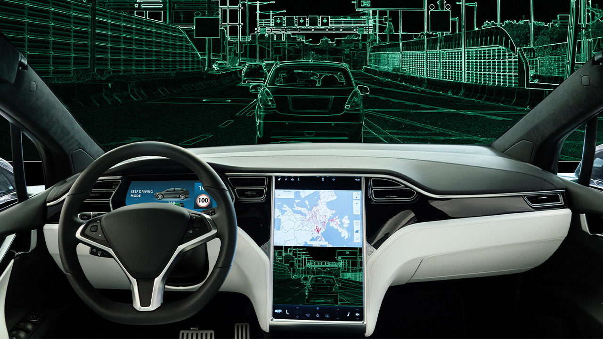
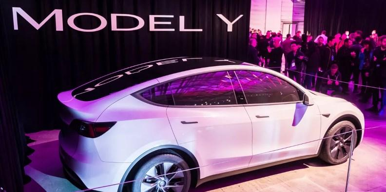
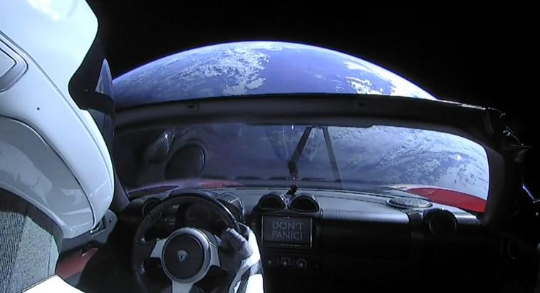

| Name | Description | Image |
| Full Self-Driving feature | In 2020, Tesla launched a full self-driving beta version. Based on the video uploaded on YouTube, the Tesla owner used this feature and managed to travel from Los Angeles to Las Vegas. Even though the Full Self-Driving feature is the most advanced system the company has launched, it still requires full attention from the driver. |  |
| Tesla Model Y | Tesla targets that by early 2020, its electric car shipments will reach half a million units. At the end of 2020, the company almost reached the target, less than 450 units. Tesla was close to reaching its previously planned sales target. This contradicts Wall Street's prediction that sales of electric cars will stall due to sizable consumer costs during this difficult time. |  |
| Tesla Roadster Approaching Mars Orbit | Since Tesla sent his Starman Roadster car into space with the aim of Mars on February 6, 2018. In October 2020, the car is predicted to approach Mars orbit. However, it is not yet known when the Roadster will land on the Red planet. |  |